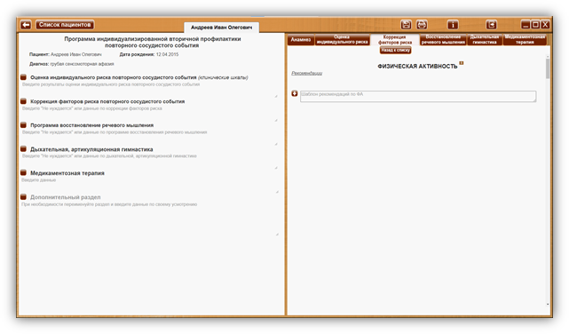

ФИЗИЧЕСКАЯ АКТИВНОСТЬ (ФА) 5

 Кнопка
«Назад к списку» - для возврата к списку факторов риска.
Кнопка
«Назад к списку» - для возврата к списку факторов риска.
ФИЗИЧЕСКАЯ АКТИВНОСТЬ (ФА) 5
Сноски на источник.
При наведении курсора на сноску на источник, открывается окно с текстом – описанием источников. При уводе курсора окно закрывается. Ознакомится со всеми источниками можно в разделе 26. Список литературы руководства пользователя.
Рекомендации или Комментарий
При клике по заголовку - ссылке «Комментарий» или «Рекомендации», открывается текст комментария или рекомендации соответственно (везде далее - аналогично).
Рекомендации
- Низкий уровень ФА является значимым ФР (факторы риска) ССЗ (сердечно-сосудистые заболевания) и их осложнений.
- Регулярная ФА — один из основных компонентов кардиоваскулярной профилактики, обеспечивающий снижение общей смертности и смертности от ССЗ.
- Лицам с низким уровнем ФА на начальном этапе следует рекомендовать аэробные физические нагрузки невысокой интенсивности (ходьба пешком, езда на велосипеде, работа по дому и на садовом участке, скандинавская ходьба, танцы, ходьба на лыжах, катание на коньках, гребля или плавание).
- Здоровым лицам необходимо заниматься аэробной умеренной ФА не менее 150 мин/нед. (30 мин/день, 5 дней/нед.) или интенсивной ФА не менее 75 мин в нед. (15 мин/день, 5 дней/нед.) или их комбинацией [211, 212]. Для получения дополнительной пользы для здоровья рекомендуется постепенное увеличение аэробной умеренной ФА до 300 мин/нед. или интенсивной ФА до 150 мин/нед. или их комбинация. Рекомендуемая частота занятий ФА — 4-5 раз/нед., лучше ежедневно.
- Рекомендуется регулярно проводить оценку и консультирование пациентов в плане физических нагрузок, чтобы стимулировать ФА и в случае необходимости поддерживать увеличение ее объема с течением времени.
- ФА/аэробная физическая тренировка должна выполняться многократно, длительность каждого периода ≥10 мин и равномерно распределятся в течение недели, т. е. на 4-5 дней в нед. (предпочтительно ежедневно).
- Лицам с ФР ССЗ, в настоящее время ведущим сидячий образ жизни, но которые намерены заниматься ФА высокой интенсивности или спортом, должна быть проведена клиническая оценка, включая тест с физической нагрузкой.
- При работе с пациентами пожилого возраста важно подчеркивать, что:
• ФА способствует увеличению независимости в ежедневных делах и развивает гибкость, снижает вероятность травм и падений.
• ФА замедляет процесс старения. С помощью ФА люди старшего возраста могут достигнуть уровня тренированности людей, которые моложе их на 15-20 лет.
• Начинать занятия надо с разминки. Когда пациенты начинают занятия ФА, 5-10 минутная разминка может составлять целое занятие.
• Надо постепенно увеличивать занятия до 30 мин в день. Если до этого пациенты вели малоподвижный образ жизни, этот период должен продолжаться минимум 3 нед.
• Пользу от занятий ФА пожилые начинают получать, как только встают со своего кресла.
- Пациенты с избыточной МТ и ожирением:
• У лиц с избыточной МТ и ожирением рекомендуются более длительные нагрузки — 40-60-90 мин ФА в день.
• Предпочтительна ФА низкой и умеренной интенсив ности: ходьба, езда на велосипеде, гребля, плавание и др.
- Занятия ФА помогают отказаться от курения курильщикам, которые до этого вели малоподвижный образ жизни, а также способствует поддержанию МТ при отказе от курения.

|
Шаблон рекомендаций по ФА
|
Шаблон рекомендаций дает возможность создать рекомендации по снижению веса на усмотрение специалиста. При нажатии на кнопку «+», в раздел «Коррекция факторов риска повторного сосудистого события» программы индивидуализированной вторичной профилактики повторного сосудистого события пациента, в личный кабинет которого осуществлен вход, вносятся:
Заголовок раздела (Физическая активность (ФА))
Дата. Содержимое шаблона рекомендаций.